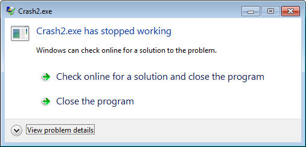
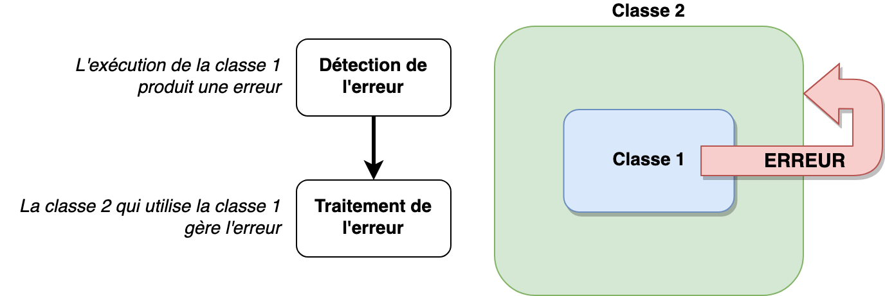

class: center, middle # Programmation orientée objet : # exceptions <img height="200px" src="img/php_logo.png"> --- ## Problématique Lors de l'exécution d'un programme, tout ne se passe pas toujours comme prévu... <p></p> -- * accès à un objet qui n'existe pas * accès à un index qui dépasse le tableau * calcul incorrect (division par 0) * connexion à une base de données interrompue (coupure internet) * ... --- ## Principe des exceptions <p></p> --- ## Traiter l'erreur : lancer une exception Lorsqu'une erreur est détectée, la classe responsable de l'erreur **lance** une erreur. ```php class Calculatrice{ function division($dividende, $diviseur){ // Détection de l'erreur if($diviseur == 0){ // Lancement ("throw") de l'erreur throw new DivisionParZeroException(); // Après un throw, la fonction s'arrête } // Ici, tout va bien return $dividende / $diviseur; } } ``` --- ## Gérer l'erreur : attraper une exception ### La méthode propage l'erreur ```php $calculette = new Calculatrice(); // Tout va bien $calculette->division(3,2); // L'exécution de la méthode s'arrête // et une exception est lancée $calculette->division(3,0); ``` → personne n'attrape l'exception : le programme s'arrête sur une erreur fatale. --- ## Gérer l'erreur : attraper une exception ### « Propager », c'est ne rien faire Quand une méthode lance une exception qu'elle n'attrape pas, celle-ci **remonte toute seule** à la méthode appelante, puis à celle qui appelle cette dernière, et ainsi de suite. ```php class Personne { function __construct($nom, $sexe) { $this->nom = $nom; // setSexe() peut lancer une SexeIncorrectException... $this->setSexe($sexe); // ... et rien ici ne l'attrape : elle remonte au script appelant } } ``` → <span style="color: red;">Il n'y a donc **aucun mot-clé à écrire** pour propager une exception en PHP : il suffit de ne pas l'attraper.</span> → et c'est un vrai choix : la classe `Personne` ne sait pas quoi faire d'un sexe invalide ; le script qui l'utilise, lui, le sait. --- ## Gérer l'erreur : attraper une exception ### La méthode attrape l'erreur ```php try{ $calculette = new Calculatrice(); // Tout va bien $calculette->division(3,2); // L'exécution du try s'arrête et une exception est lancée $calculette->division(3,0); }catch(DivisionParZeroException $e){ // L'exception est attrapée echo "Interdiction de diviser par zéro !"; }finally{ // Bloc de code qui s'exécute quoi qu'il arrive // Après un bloc try ou un bloc catch } ``` --- ## Définition d'une exception personnalisée ```php class DivisionParZeroException extends Exception { } ``` → le corps est vide : tout ce dont on a besoin est **hérité** de `Exception`. --- ## Une exception transporte un message Puisqu'elle hérite de `Exception`, notre exception hérite aussi de son **constructeur**, qui accepte un message : ```php throw new DivisionParZeroException("Division de " . $dividende . " par zéro"); ``` Ce message se récupère du côté de celui qui attrape, avec `getMessage()` : ```php try { $calculette->division(3, 0); } catch (DivisionParZeroException $e) { echo "Erreur : " . $e->getMessage(); } ``` → affiche `Erreur : Division de 3 par zéro` → <span style="color: red;">`$e` est un **objet** comme les autres : `getMessage()` est une de ses méthodes.</span> --- ## À quoi sert `finally` ? Le bloc `finally` s'exécute **dans tous les cas** : qu'une exception ait été lancée ou non. ```php try { $fichier = ouvrirFichier("donnees.txt"); $fichier->lire(); } catch (LectureException $e) { echo "Lecture impossible : " . $e->getMessage(); } finally { // exécuté qu'il y ait eu une erreur ou non echo "Fin de la tentative de lecture."; } ``` → on y place ce qu'il faut faire **quoi qu'il arrive** : fermer un fichier, fermer une connexion, afficher un message de fin. --- ## Lancer une exception depuis un constructeur Un constructeur peut lui aussi détecter une erreur et lancer une exception : ```php class Article { private $libelle; private $prix; function __construct($libelle, $prix) { if ($prix < 0) { throw new PrixNegatifException("Prix invalide : " . $prix); } $this->libelle = $libelle; $this->prix = $prix; } } ``` --- ## Lancer une exception depuis un constructeur → <span style="color: red;">Attention : si le constructeur lance une exception, l'objet **n'est jamais créé**.</span> ```php try { $article = new Article("Clavier", -20); } catch (PrixNegatifException $e) { echo $e->getMessage(); } // ici, $article n'existe pas : l'utiliser provoquerait une erreur ``` → c'est justement l'intérêt : une exception dans le constructeur **empêche** la création d'un objet incohérent. --- ## Plusieurs erreurs possibles, plusieurs `catch` Une même opération peut échouer de plusieurs façons. On enchaîne alors les `catch` : ```php try { $catalogue->ajouterArticle($article); } catch (ConnexionException $e) { echo "Base de données injoignable : " . $e->getMessage(); } catch (ArticleDejaExistantException $e) { echo "Cet article existe déjà : " . $e->getMessage(); } ``` → PHP exécute **le premier `catch` dont le type correspond**, et celui-là seulement. --- ## Plusieurs erreurs possibles, plusieurs `catch` Comme toutes nos exceptions héritent de `Exception`, on peut aussi toutes les attraper d'un coup : ```php try { $catalogue->ajouterArticle($article); } catch (Exception $e) { echo "Une erreur est survenue : " . $e->getMessage(); } ``` → <span style="color: red;">…mais on perd l'information : impossible de réagir différemment selon l'erreur.</span> → à réserver aux cas où la réaction est la même quelle que soit l'erreur. --- ## Attraper une erreur… pour en lancer une autre Parfois, l'erreur reçue n'est pas celle que l'on veut montrer. Un catalogue interroge une base de données. Si la connexion tombe, il reçoit une `ConnexionException` — un détail technique dont l'utilisateur du catalogue n'a que faire. ```php class Catalogue { function obtenirArticle($reference) { try { return $this->bd->chercher($reference); } catch (ConnexionException $e) { // on remplace l'erreur technique par une erreur compréhensible throw new CatalogueIndisponibleException( "Le catalogue est momentanément indisponible"); } } } ``` → le `catch` attrape une exception, et le `throw` en relance **une autre**. → <span style="color: red;">Chaque partie du programme lance les erreurs de son propre vocabulaire.</span> --- ## Coding time ! ### Todo : * Exercice 1 (Série 6) * Exercice 2 (Série 6) * Exercice 3 (Série 6) <img height="400px" src="img/fast.gif">